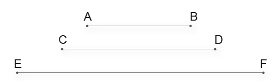

CAPÍTULO 2 - As medidas de comprimento e o sistema métrico decimal
Metro
As primeiras unidades de medida de comprimento utilizavam partes do corpo como referência: dedos, pés, braços, etc. Com o passar do tempo, percebeu-se que essa maneira de medir não era prática, tendo em vista que essas medidas podiam variar de acordo com o tamanho de cada pessoa.
Por isso, em 1799, representantes de vários países se reuniram em Paris para definirem padrões para o sistema métrico de medidas e, a partir daí, foi adotado um sistema único de medidas. Estabeleceu-se então o metro (m) como unidade-padrão para medir comprimentos.

1. Com um colega, observem os instrumentos apresentados a seguir para medir comprimentos. Troquem ideias e escrevam, no caderno, o nome de cada um deles e indiquem um profissional que os utiliza no seu dia a dia.

Crédito das imagens: Public Domain Pictures / Pixabay, Vince Varga / Free images, Humusak / Pixabay e S.I. / Creative Commons.
216
UNIDADE 6 - CAPÍTULO 2
Múltiplos e submúltiplos do metro
O metro não é a única unidade de medida utilizada para medir comprimento, embora outras unidades tomem como base o metro. Quando precisamos medir um comprimento que é menor que o metro, utilizamos seus submúltiplos: decímetro, centímetro ou milímetro.
Podemos visualizar essas medidas utilizando uma régua.

Observe: Reinaldo Rosa/Acervo da Editora
Os submúltiplos do metro são obtidos a partir do metro. Veja as relações desses submúltiplos com o metro.
► Dividindo-se um metro em 10 partes iguais, cada uma delas corresponde a um decímetro.
1 dm = 1/10 do metro = 0,1 m
1 m = 10 dm 10
► Dividindo-se um metro em 100 partes iguais, cada uma delas corresponde a um centímetro.
1 cm = 1/100 do metro = 0,01 m
1 m = 100 cm 100
► Dividindo-se um metro em 1 000 partes iguais, cada uma delas corresponde a um milímetro.
1 mm = 1/1000 do metro = 0,001 m
1 m = 1 000 mm 1 000
Já para medir comprimentos maiores que o metro, utilizamos os seus múltiplos: decâmetro, hectômetro ou quilômetro. Dentre as três unidades de medida a mais utilizada é o quilômetro.
Os múltiplos do metro também são obtidos a partir do metro. Veja as relações desses múltiplos com o metro.
► Multiplicando-se um metro por 10 temos um decâmetro.
1 dam = 10 m
1 m = 0,1 dam
► Multiplicando-se um metro por 100 temos um hectômetro.
1 hm = 100 m
1 m = 0,01 hm
► Multiplicando-se um metro por 1 000 temos um quilômetro.
1 km = 1 000 m
1 m = 0,001 km
UNIDADE 6 - CAPÍTULO 2
217
Observe no quadro a seguir a representação dos submúltiplos e múltiplos em relação ao metro.
![Quadro com a representação dos múltiplos e submúltiplos em relação ao metro. O quadro especifica o nome da unidade, como é o seu símbolo e o valor em relação ao metro. As três unidades dos múltiplos são: Quilômetro, símbolo km, valor em relação ao metro: mil metros. Hectômetro, símbolo hm, valor em relação me metro: 100 metros. Decâmetro, símbolo dam, Valor em relação ao metro: 10 m. No centro do quadro, a unidade padrão Metro, símbolo m, valor em relação ao metro: 1m. No quadro à direita, as três unidades dos submúltiplos: Decímetro, símbolo dm, valor em relação ao metro 0,1m. Centímetro, símbolo cm, valor em relação ao metro, 0,01m. Milímetro, símbolo mm, valor em relação ao metro, 0,001m.](../../resources/images/tb220.PNG)
As unidades de medidas de comprimento apresentadas no quadro fazem parte do Sistema Métrico Decimal.
ENCONTRE SOLUÇÕES
1. Quilômetro, metro, centímetro ou milímetro. Qual dessas unidades é a mais adequada para medir:
a) a espessura de uma caixa de DVD?
b) a distância entre duas cidades?
c) a altura da porta de sua sala de aula?
d) a largura da quadra de esportes?
e) o comprimento do seu livro?
f) a distância entre dois planetas?
g) a espessura da ponta de uma lapiseira?
h) o comprimento de uma rodovia?
i) a sua altura?
j) a largura de uma carteira?
2. Estimativa é o resultado de um cálculo aproximado e normalmente realizamos mentalmente. Com um colega, no caderno, copiem a tabela a seguir e façam uma estimativa da medida de comprimento em cada um dos itens. Depois, utilizando um instrumento como fita métrica, trena ou metro de carpinteiro, confiram as medidas para verificar se a estimativa feita foi próxima do real.


3. Observe os segmentos de reta abaixo. Em seu caderno, construa uma tabela como na atividade anterior e faça uma estimativa da medida de comprimento em milímetros de cada um deles. Depois, com o auxílio de uma régua verifique as medidas.
218
UNIDADE 6 - CAPÍTULO 2
4. Em seu caderno, escolha a medida de comprimento que mais se aproxima de cada uma das situações.
a) A altura de um colega.
b) A distância entre Natal e Aracaju.
c) O comprimento de um filhote de tartaruga cabeçuda.
d) A largura de uma cozinha.
e) A distância entre Porto Alegre e Florianópolis.
f) A espessura de um vidro da janela.
g) O comprimento de uma lapiseira.
( ■ ) 4 cm
( ■ ) 4 mm
( ■ ) 785 km
( ■ ) 2 m
( ■ ) 154 cm
( ■ ) 456 km
( ■ ) 14 cm

5. (OBMEP) Uma formiguinha andou sobre a borda de uma régua, da marca de 6 cm até a marca de 20 cm. Ela parou para descansar na metade do caminho. Em que marca ela parou?

a) 11 cm
b) 12 cm
c) 13 cm
d) 14 cm
e) 15 cm
6. (OBMEP) Guilherme está medindo o comprimento de um selo com um pedaço de uma régua, graduada em centímetros, como mostra a figura. Qual é o comprimento do selo?

a) 3 cm
b) 3,4 cm
c) 3,6 cm
d) 4 cm
e) 4,4 cm
UNIDADE 6 - CAPÍTULO 2
219